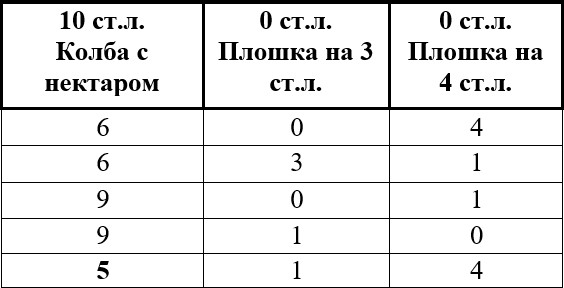

Сборник задач
Вдоль прямолинейной аллеи растут четыре дерева. Расстояния между соседними из них равны 56, 16, 96 метрам.
Какое наименьшее число деревьев надо ещё посадить, чтобы расстояния между любыми двумя соседними деревьями были равны между собой?
Решение
Нужно посадить деревья так, чтобы расстояние d между соседними деревьями было одно и тоже и являлось наибольшим из возможных (именно в этом случае количество деревьев будет минимальным).
Найди наибольший общий делитель чисел 56, 16 и 96. Отношение длины всей аллеи к найденному НОДу даст общее количество деревьев, которые должны расти вдоль аллеи, чтоб выполнялись условия задачи. К полученному значению необходимо одно дерево, от которого ведется отсчет, и отнять те четыре, что уже растут.

Три года назад Оля была в три раза моложе своего брата Степана, а четыре года назад в четыре раза моложе Степана.
Сколько лет Степану и Оле сейчас?
В ответ запишите произведение полученных значений.
Решение
Обозначь через x лет возраст Оли 4 года назад. Тогда четыре года назад возраст Степана равен 4x лет. Через год Оле исполнится x+1 год, а Степану 4x+1 год. Тогда выполняется равенство 3(x + 1) = 4x + 1 откуда находим x = 2.
Итак, четыре года назад Оле было 2 года, а Степану – 8 лет. Значит, сейчас Оле 6 лет, а Степану 12 лет. 6*12=72
В детском магазине есть много интересных игрушек. Среди них на одной полке лежат мишки, куклы, мячики и машинки. Известно, что машинка весит столько же, сколько весит мишка и кукла вместе, а три мячика – столько же, сколько две машинки. Кроме того, мишка весит столько же, сколько весит кукла и мячик вместе.На правую чашу весов положили мишку.
Сколько кукол нужно положить на левую чашу, чтобы весы находились в равновесии?
Решение
Согласно условию задачи:
машинка = мишка + кукла
мишка = мячик + кукла
машинка = мячик + 2 куклы
2 машинки = 2 мячика + 4 куклы
Но, по условию: 2 машинки = 3 мячика
Получаем: 2 машинки = 3 мячика= 2 мячика + 4 куклы
1 мячик = 4 куклы
Тогда мишка (равный по весу кукле и мячику вместе) весит столько же, сколько весят вместе 5 кукол.
Часы Васи отстают на 5 минут, но он считает, что его часы спешат на 10 минуты. Часы Пети спешат на 2 минуты, однако он думает, что они отстают на 8 минут. Друзья договорились, что встретиться в 6 часов вечера.
Кто из мальчиков придёт позже и на сколько минут?
Решение
Чтобы понять, кто из мальчиков придет позже и на сколько, достаточно определить реальное время в момент прихода каждого. Найдем разницу между реальным временем и тем временем, которое показывают часы Васи. Пусть точное время x минут, тогда на часах Васи x - 5 минут. Так как он думает, что они спешат, значит считает, что сейчас x - 5 - 10 минут. Поэтому значение реального времени на 15 минут больше того, которое представляет себе Вася. Это означает, что к моменту прихода Васи в точку встречи реальное время составит 18 ч 15 мин.
Пусть y минут — реальное время. Тогда часы Пети в этот момент показывают y + 2 минут. Так как он думает, что часы отстают на 8 минут, значит считает, что в этот момент y + 2 + 8 минут. Поэтому значение реального времени на 10 минут меньше, чем думает Петя.
Это значит, что к моменту прихода Пети реально 17 ч 50 мин.
Значит Вася пришел позже Пети на 25 минут.
Кассир продал все билеты в первый ряд кинотеатра, причем по ошибке на одно из мест было продано два билета. Сумма номеров мест на всех этих билетах равна 857.
На какое место продано два билета?
Решение
Сумма чисел от 1 до 39 равна 780, сумма чисел от 1 до 40 равна 820, а сумма чисел от 1 до 41 равна 861. Значит количество мест в ряду может быть только 40.Тогда 857 – 820 = 37 – и есть номер места, на который было продано два билета.
У Миши и Саши к предстоящему празднику имелось по одинаковой прямоугольной открытке. Каждый из мальчиков разрезал свою открытку на два прямоугольника равной площади и один из них выбросил, а один оставил себе. Оказалось, что периметр Мишиного прямоугольника равен 18 см, а Сашиного – 27 см.
Найди длины сторон открытки и ее периметр.
В ответ запиши сумму полученных значений.
Решение
Обозначим стороны исходного прямоугольника (прямоугольной открытки) через a и b, а через P – его периметр P =2(a + b). После разрезания каждый получил по два прямоугольника равной площади, значит каждый из них разрезал свою открытку пополам. Раз периметры полученных прямоугольников различны, то разрезали открытки различными способами: один вдоль, а второй поперек. Получили по два равных прямоугольника либо со сторонами и b, либо со сторонами a и (см. рис.)
Пусть у Миши остался прямоугольник со сторонами и b, тогда у Саши – со сторонами a и .
Периметр Мишиного прямоугольника равен:
А периметр Сашиного:
Поэтому сумма периметров Мишиного и Сашиного прямоугольников равна:
На дороге между Цветочным и Солнечным городами Незнайка открыл бензоколонку, которая расположена в два раза ближе к Цветочному городу, чем к Солнечному. Однажды из Солнечного города в Цветочный выехал Винтик, а через некоторое время из Цветочного города в Солнечный выехал Шпунтик. Встретившись в закусочной автозаправки, они перекусили, заправили свои автомашины бензином и, распрощавшись, одновременно продолжили свой путь. Доехав до пунктов назначения, оба вспомнили, что забыли расплатиться с Незнайкой за бензин, и тут же повернули назад. К бензоколонке они прибыли одновременно.
Найди отношение скорости Шпунтика к скорости Винтика.
Решение
Через x обозначим расстояние от автозаправки до Цветочного города; тогда, по условию 2x – расстояние от автозаправки до Солнечного города. Расстояния от заправки до пунктов назначения и обратно до заправки Винтик и Шпунтик преодолели за одинаковое время. Значит отношение скоростей равно отношению расстояний, которые преодолели малыши. Винтик проехал расстояние равное x + x = 2x, а Шпунтик проехал расстояние равное 2x+2x=4x. Значит, скорость Шпунтика больше скорости Винтика в 4x:2x=2 раза.
Во время проведения конкурса по рисованию. Каждому участнику были выданы 1 альбомный лист, 1 простой карандаш и 1 набор красок. Всего у организаторов было 60 альбомных листов, а количество простых карандашей было в два раза больше, чем наборов красок. После окончания конкурса выяснилось, что число красок, которые не раздали, в два раза меньше числа оставшихся альбомных листов и в три раза меньше числа оставшихся карандашей.
Определи количество участников конкурса?
Решение
Обозначим х – число участников конкурса, а у – число наборов красок. Тогда, согласно условию, число карандашей равно 2у. После проведения конкурса осталось: 60-х альбомных листов, у-х – красок и 2у-х – карандашей.
Тогда 2(у-х)=60-х и 3(у-х)=2у-х
Получим: у = 2х
2х=60-х
3х=60
х=20.
Продавец закупил одинаковые партии ручек и карандашей. За карандаши он заплатил в два раза больше, чем за ручки. В своем магазине он продавал ручки по 13 рублей за одну штуку, а карандаши по 43 рубля за три штуки. Оказалось, что с каждой продажи продавец получал одинаковую прибыль.
Найди закупочную цену одной ручки.
Решение
Пусть закупочная цена ручки x, тогда закупочная цена карандаша 2x. Прибыль за одну ручку 13-x, а за 3 карандаша 43-6x. Решая уравнение 13-x = 43-6x, получаем x = 6.
Квадратный оконный проем образован двумя прямоугольными рамами. Внутри каждой из них написали число, равное периметру рамы.
Найди, чему равна сторона квадрата всего оконного проема. 
Решение
Пусть сторона квадрата равна a, а ширина левого прямоугольника равна b. Тогда ширина правого прямоугольника равна a-b.
Левый прямоугольник дает соотношение 2a+2b=16, а правый прямоугольник дает соотношение 2a+2a-2b=20. Сложив эти два соотношения друг с другом, получим 6a=36, откуда a=6.
В автобусе ехало не более ста пассажиров, причём число сидящих пассажиров было в 2 раза больше, чем стоящих. На остановке из автобуса вышло 5 % всех пассажиров.
Найди число пассажиров, оставшихся в автобусе.
Решение
Так как число сидящих пассажиров в 2 раза больше числа стоящих, то общее число пассажиров N должно делиться на 3. Кроме того, поскольку на остановке вышло 5 % всех пассажиров, т.е. пассажиров, то (1/20)*N должно делиться и на 20. Итак, N делиться на 3 и 20, то N должно делиться на 60. По условию N ≤ 100, поэтому N = 60 единственное число, удовлетворяющее всем условиям задачи. Следовательно, в автобусе осталось 60-(1/20)*60=60-3=57 пассажиров.
Вдоль скоростной автострады расположены мини-кафе «Вёсочка», «Чугунка», «Колорадо», «Стрекоза», «Очаг» в указанном порядке. Расстояние между «Вёсочкой» и «Чугункой» равно 120 км, расстояние между кафе «Колорадо» и «Очаг» равно 250 км. А расстояние между «Вёсочкой» и «Колорадо» равно расстоянию между «Чугункой» и «Стрекоза».
Чему равно расстояние между кафе «Стрекоза» и «Очаг»?
Решение
Нарисуем схему расположения всех мини-кафе, обозначая их начальными буквами их названий.
Согласно условию, отрезки ВК = ЧС. Поэтому, удаляя их общую часть – отрезок ЧК, получаем равные отрезки ВЧ=120=КС. Значит, СО=КО–КС=250–120=130 км.
Из журнала Катя случайно вырвала часть подряд идущих листов. Оказалось, что номера первой и последней его страниц – трёхзначные числа, в записи каждого из которых участвуют только цифры 1, 2, 5.
Сколько страниц содержит вырванный кусок?
Решение
Какая бы часть ни была вырвана, его первая страница имеет нечётный номер, а последняя – чётный.
Составим всевозможные трёхзначные числа, каждое из которых содержит только цифры 1, 2 и 5, и запишем их в порядке возрастания: 125, 152, 215, 251, 512, 521. Из них надо выбрать два числа (номера страниц) – нечётное и чётное, причём чётное должно быть больше нечётного. Такая пара чисел только одна – это 125 и 152. Поэтому номера первой и последней страниц вырванного куска равны соответственно 125 и 152, т.е. кусок содержит 152–125+1=28 страниц.
Федя и Аня играют в такую игру. У каждого из них в кармане имеется набор из 20 фишек, на каждой из которых записано некоторое число. На Фединых фишках записаны по 4 раза числа 1, 5, 6, 7 и 9, а на Аниных по 4 раза числа 2, 3, 4, 8 и 10. Ход в этой игре заключается в следующем. Федя и Аня одновременно извлекают наудачу по одной фишке из кармана и сравнивают записанные на них числа. Тот из них, у которого число больше, вычитает из него меньшее число, результат записывает на свою фишку вместо написанного на ней числа и кладёт эту фишку обратно в карман. Фишка с меньшим числом при этом выбрасывается. Если на обеих фишках одинаковые числа, то обе фишки выбрасываются. Вслед за этим делается новый ход и т.д. Побеждает тот, у соперника которого не останется фишек.
Вычислите общую сумму чисел на фишках, оставшихся у победителя.
Решение
Поскольку на каждом ходу выбрасывается хотя бы одна фишка, то рано или поздно либо Федя, либо Аня окажется без фишек, т.е. игра закончится.
Далее, после каждого хода сумма всех чисел на Фединых фишках и сумма всех чисел Аниных фишках уменьшается на одинаковое число (своё для каждого хода). Игра, очевидно, закончится, как только сумма чисел у кого-либо станет нулевая – тот и проиграет. Значит, проигрывает тот, у кого исходная сумма чисел меньше, т.е. Аня (2+3+4+8+10=27). Победит, стало быть, Федя. При этом у него в конце останутся фишки (или фишка) с общей суммой чисел на них: 4(1+5+6+7+9)–4(2+3+4+8+10) = 4.
В угловых клетках квадрата 3 х 3 клеточки записаны числа 1, 8, 8, 6 так, как показано на рисунке.
Можно ли в пустые клетки вписать некоторые числа (в каждую клетку – одно число) так, чтобы сумма чисел во всех четырёх угловых квадратах 2 х 2 была одна и та же?
Решение
Предположим, что вписать числа так, как сказано в условии задачи, можно.
Пусть в пустую клетку верхней строки списано число а, а в пустую клетку нижней строки – число b. Поскольку суммы чисел в левых верхнем и нижнем квадратах 2 х 2 совпадают и эти два квадрата имеют две общие клетки, то 1+а=8+b, откуда а=7+b. Аналогично, сравнивая суммы чисел в правых верхнем и нижнем квадратах 2х2, получаем 8+а=6+b, откуда а=b–2. Тогда 7+b=b–2 – противоречие. Значит выполнить предложенное условие нельзя.
Однажды Федя на одном весёлом празднике решил поучаствовать в интересном конкурсе – метании дротиков в воздушные шарики. За каждое точное попадание в шарик получаешь 2 дополнительных дротика, а за каждый промах 1 дротик забирают.В конце метания выяснилось, что изначально у него было столько же дротиков, сколько раз он попал, а кинуть ему удалось 26 раз.
Сколько раз Федя попал в шарики?
Решение
Пусть x – число попаданий Феди, а значит, согласно условию, и число оплаченных им метаний. Число дротиков у Феди после каждого промаха уменьшалось на 2 (1 дротик он кидал и 1 у него забирали из-за промаха), а после каждого попадания в шарик увеличивалось на 1 (1 дротик он кидал и 2 дротика ему выдавали в качестве приза). Следовательно, ему удалось сделать либо x + 2x – (26 – x) + 1 = 4x – 25 метаний, если последим дротиком Федя не смог попасть в шарик, либо x + 2x – (26 – x) = 4x – 26 метаний, если последний дротик у него забрали. Поэтому либо 26 = 4x – 25, что невозможно ни при каком целом x, либо 26 = 4x – 26, откуда x = 13.
Новый год! И всем детям под ёлку Дед Мороз принёс сладкие подарки.
Вика, Олег и Миша – дети одной семьи. И вот однажды они объединили все свои конфеты из сладких подарков и начали их делить между собой. Сначала Вика взяла себе 20% всех конфет и ещё 12 конфет, затем Олег взял 25% оставшихся конфет и ещё 15 конфет, и, наконец, Миша взял 30% оставшихся после этого конфет и ещё 21 конфету. В результате такой делёжки все конфеты оказались разобранными.
Найди значение выражения O*B-M, где О, В, М – количество конфет, доставшихся Олегу, Вике, и Мише соответственно.
Решение
Миша взял себе 30% оставшихся конфет и ещё 21 конфету и после этого конфеты оказались разобранными. Значит 21 конфета составляет 70% числа конфет, оставшихся после того, как Вика и Олег забрали свои конфеты. Следовательно, Миша взял 21/70*100=30 конфет. Эти 30 конфет и те 15, которые взял Олег, составляли, согласно условию,
100% - 25% = 75% конфет, оставшихся после того, как угостилась Вика. (30+15)/75*100 конфет осталось после Вики. Из них Олег взял конфет.
Далее, 60 конфет, оставшихся после Вики, плюс ещё 12 взятых ей конфет составляют 100% - 20% = 80% от первоначального количества конфет. Поэтому вначале было 72/80*100=90 конфет, из которых Вика взяла 30 конфет.
O*B-M=30*30-30=870
Коля, Ира, Аня и Федя – друзья. Однажды они решили выяснить, кто из них выше всех. Для этого они выстроились в один ряд в порядке убывания их роста (среди них нет имеющих одинаковый рост). Затем Федя и Коля поменялись местами, Ира и Аня также поменялись местами. Оказалось, что теперь друзья стоят в порядке возрастания их роста.
Кто самый высокий из друзей, если известно, что Коля выше Ани, но ниже Иры? В ответ запиши его имя.
Решение
Не самых высоких и не самых низких, назовём ребятами среднего роста. Если бы при обмене местами самый высокий из них поменялся с каким-нибудь другом среднего роста, то в получившемся ряду он стоял бы не с краю, т.е. ребята в этом ряду стояли бы не по росту, что противоречит условию. Следовательно, менялись местами ребята в следующих парах: одна пара – самый высокий и самый низкий, другая пара состоит из ребят среднего роста. Так как, по условию, Коля выше, но ниже Иры, он имеет средний рост, а тогда средний рост имеет и Федя, с которым, по условию, поменялся Коля. Следовательно, Аня – самая низкая, а Ира – самая высокая из друзей.
В мультике «38 попугаев» попугай ввёл единицу измерения длины в «попугаях». Точно так же можно измерять в «слонёнках» и в «мартышках». Длина удава составила 32 «попугая» или 2 «слонёнка».
Чему равна длина удава в «мартышках», если известно, что длина слонёнка в «мартышках» равна длине мартышки в «попугаях»?
Решение
Длина удава 32 «попугая» или 2 «слонёнка», значит длина слонёнка равна 32:2 =16 «попугаев»
По условию, длина слонёнка в «мартышках» равна длине мартышки в «попугаях». Имеем: в слонёнке – x мартышек, но в каждой «мартышке» – x попугаев, поэтому длина слонёнка x*x «попугаев» = 16 «попугаев». Значит x = 4.
В удаве 2 «слонёнка», а в каждом «слонёнке» 4 мартышки, тогда длина удава составляет 2*4=8 «мартышек»
В некоторой деревне каждый из деревенских жителей либо всегда лжёт, либо всегда говорит правду. Двое из трёх деревенских жителей К, Л и Д высказали следующие утверждения:
К: «Деревенский житель Л – лжец».
Л: «Ровно один из деревенских жителей К и Д – лжец».
Кем является деревенский житель Д? В ответ запиши Л, если житель Д всегда лжет и П, если он всегда говорит правду.
Решение
Пусть К – лжец, тогда (так как К солгал) Л – правдивый, и поэтому (чтобы высказывание Л было правдой и так как, по предположению, К – лжец) деревенский житель Д должен быть правдивым. Пусть К – правдивый, тогда (так как К сказал правду) Л – лжец, и поэтому (чтобы высказывание Б было ложью и так как, по предположению, К – правдивый) деревенский житель Д должен быть правдивым. Итак, в любом случае житель Д всегда говорит правду.
Баба Яга варит приворотное зелье. Из колбы, в которой находится 10 столовых ложек волшебного нектара, необходимо налить в котелок с зельем 5 таких ложек одной порцией.
У Бабы Яги есть две плошки: в одну помещается 3 столовые ложки нектара, а во вторую – 4.
Какое минимальное количество переливаний сделает Баба Яга, чтобы приготовить зелье?
Решение
Все ходы переливания можно представить в виде таблицы.

Число 111…1a кратно 9.
Чему равно а, если количество единиц в числе 2020?
Решение
Число делится на 9, если сумма цифр числа делится на 9. Данное число можно разделить на 224 группы цифр по 9 единиц, каждая группа при этом делится на 9. Осталось 4 незадействованные единицы и цифра а. Согласно признаку делимости на 9 число 1111a будет кратно 9, если сумма 1+1+1+1+a кратна 9. Тогда 5 – единственное возможное значение a.
Войдя в класс, учитель математики увидел на доске надпись:
В*А*Н*Я + Л*Ю*С*Я = Л*Ю*Б*О*В*Ь
«Очень интересно! – подумал учитель. – Кстати, какие значения может принимать сумма С + Я?»
Ответь на этот вопрос, если записанное равенство верное, а буквами в нём обозначены цифры (одинаковые цифры – одинаковыми буквами, а разные – разными; звёздочка между буквами – знак умножения).
В ответ запиши сумму полученных значений или само значение, если таковое одно.
Решение
Примечание: ^ - знак степени. Например: 2^3 - значит 2 в степени 3.
Заметим, что в равенстве присутствуют ровно 10 различных букв: В, А, Н, Я, Л, Ю, С, Б, О, Ь, - а значит, все 10 цифр, включая 0. Поэтому по крайней мере одно из трёх произведений равно 0. Если бы все три произведения равнялись нулю, то была бы буква (та, которая соответствует нулю), присутствующая в каждом из них. Но такой буквы нет. Поэтому произведения не равны нулю одновременно. Два из этих произведений также не могут равняться нулю, потому что тогда равенство невозможно. Следовательно, нулевым является ровно одно из произведений в левой части равенства. Предположим сначала, что Л*Ю*С*Я=0.
Тогда равенство приобретает вид: В*А*Н*Я = Л*Ю*Б*О*В*Ь
Подсчитав в этом равенстве количество различных букв (их 9) и учитывая, что обе его части ненулевые, заключаем, что в них присутствует все девять нулевых цифр. Так как среди цифр, больших 1 имеются ровно две, 5 и 7, такие, что эти цифры – 5 и 7 – должны встречаться в обеих частях равенства. Следовательно, в каждую из частей этого равенства должны входить по крайней мере 2 одинаковые буквы, соответствующие цифрам 5 и 7. Но это не так: имеется только одна общая буква – В. Значит, рассматриваемый случай невозможен.
Поэтому, произведение В*А*Н*Я = 0 и равенство принимает вид: Л*Ю*С*Я = Л*Ю*Б*О*В*Ь
После сокращения в обеих частях равенства общих множителей Л и Ю, получим С*Я = Б*О*В*Ь . Среди шести различных ненулевых цифр, соответствующих шести различным буквам этого равенства, нет ни 5, ни 7, иначе равенство было бы невозможно.
Значит, буквы С, Я, Б, О, В, Ь обозначают какие-то 6 различных из семи цифр 1, 2, 3, 4, 6, 8, 9. Простыми делителями всех этих цифр (кроме 1, которую в произведении можно не учитывать) являются только 2 или 3. Так как произведение С*Я*Б*О*В*Ь должно быть квадратом натурального числа, т.е. в его разложении на простые множители 2 и 3 входят в чётных степенях, а 1*2*3*4*6*8*9=2^3 * 3^4, то среди цифр, соответствующих буквам С, Я, Б, О, В, Ь, может быть только либо 2, либо 8.
В первом случае имеем: С*Я*Б*О*В*Ь = 2^6 * 3^4, - значит, С*Я = 2^3 * 3^2 , и поэтому С и Я – это 8 и 9, т.е. сумма С+Я=17.
Во втором случае С*Я*Б*О*В*Ь = 2^4 * 3^4 , т.е. С*Я = 2^2 * 3^2 , и, значит, С и Я – это 4 и 9, а сумма С+Я=13.
Про некоторый треугольник MNK известно, что на его стороне NK существует такая точка L, что ML = NL и MN = KL = MK.
Найди разность наибольшего и наименьшего углов треугольника.
Решение

Обозначим через x величину угла ∠LMN. Так как треугольник MNL равнобедренный (ML=NL по условию), то x= ∠LNM = ∠LMN. По теореме внешнего угла треугольника, ∠ MLK = ∠LMN + ∠LNM = 2x. Так как треугольник MLK равнобедренный (MK = KL, по условию), то ∠LMK = ∠MLK = 2x. Следовательно, так как сумма углов треугольника равна 180°, из MKL найдём ∠MKL = 180° - 4x. Далее, так как, по условию, MN = MK, то ∠MNL=∠MKL или x = 180° - 4x. Отсюда x = 36°.
Итак, углы треугольника равны 36°, 36°, 108°.
108°- 36°= 72°
В олимпиаде по математике приняло участие 150 пятиклассников. Каждому из участников было предложено для решения 5 задач. После проверки работ выяснилось, что 1/3 всех участников решила только одну задачу, 1/5 всех участников решила ровно по две задачи и 1/6 всех участников – 3 задачи. Общее число решённых задач оказалось равным 366.
Сколько участников олимпиады решили все 5 задач?
Решение
Из условия следует, что 50 человек решили одну задачу, 30 – по 2 задачи и 25 – по 3 задачи. То есть эти 105 человек решили 50*1+30*2+25*3 = 185 задач.
Пусть x – количество участников, решивших пять задач, тогда 45-x решили по четыре задачи.
Тогда x*5+(45-x)*4=366-185 задач
x*5+(45-x)*4=181
x*5+45*4-x*4=181
x*1=181-180
x=1
Все пять задач решил один участник олимпиады